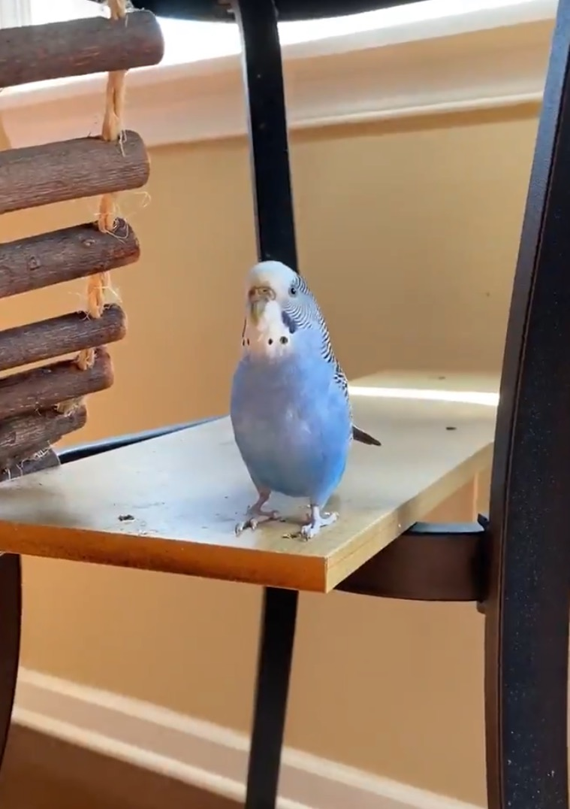

Carlos
Carlos is a blue parakeet/budgerigar that my older sister adopted from her friend in high school. Carlos is 9 years old and loves flying around the kitchen and standing on chandeliers. She has very loud chirps and loves to chatter when people play instruments. Although she can be aggressive at times and is very unfriendly towards strangers, she has a very soft bite.
Carlos has a sister named Einstein. We did not discover the genders of our pet birds until years after we named them. At night, Carlos always sleeps on her favorite yellow swing and will wake up in the same spot every morning in the upstairs of her cage ready to come out and play.
Photo Gallery


Likes
- Spinach
- Flying around
- Taking baths
Jax

Jax is a kitten, about five months old that I found this summer at a gas station while traveling to Marquette, Michigan. He was scared and malnourished, crying in the parking lot. I took him with me and after some healthy meals and a trip to the vet he is doing great!
My roommates and I just recently moved and Jax has been having a hard time getting used to the large house since we were previously living in a small apartment. Jax is incredibly playful and loves to run around, but when he is sleepy he is happy to be held.
Photo Gallery


Likes
- Toys
- Going outside
- Attention